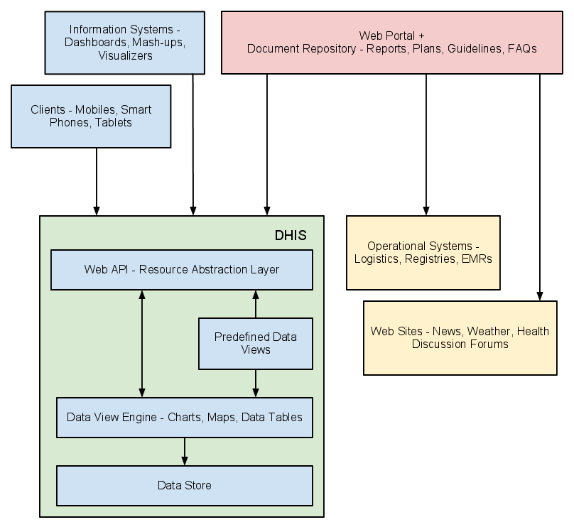

DHIS can be perceived as a platform on several levels. First, the application database is designed ground-up with flexibility in mind. Data structures such as data elements, organisation units, forms and user roles can be defined completely freely through the application user interface. This makes it possible for the system to be adapted to a multitude of locale contexts and use-cases. We have seen that DHIS supports most major requirements for routine data capture and analysis emerging in country implementations. It also makes it possible for DHIS to serve as management system for domains such as logistics, labs and finance.
Second, due to the modular design of DHIS it can be extended with additional software modules. These software modules can live side by side with the core modules of DHIS and can be integrated into the DHIS portal and menu system. This is a powerful feature as it makes it possible to extend the system with extra functionality when needed, typically for country specific requirements as earlier pointed out.
The downside of the software module extensibility is that it puts several constraints on the development process. The developers creating the extra functionality are limited to the DHIS technology in terms of programming language and software frameworks, in addition to the constraints put on the design of modules by the DHIS portal solution. Also, these modules must be included in the DHIS software when the software is built and deployed on the web server, not dynamically during run-time.
In order to overcome these limitations and achieve a looser coupling between the DHIS service layer and additional software artifacts, the DHIS development team decided to create a Web API. This Web API complies with the rules of the REST architectural style. This implies that:
The Web API provides a navigable and machine-readable interface to the complete DHIS data model. For instance, one can access the full list of data elements, then navigate using the provided hyperlink to a particular data element of interest, then navigate using the provided hyperlink to the list of forms which this data element is part of. E.g. clients will only do state transitions using the hyperlinks which are dynamically embedded in the responses.
Data is accessed through a uniform interface (URLs) using a well-known protocol. There are no fancy transport formats or protocols involved - just the well-tested, well-understood HTTP protocol which is the main building block of the Web today. This implies that third-party developers can develop software using the DHIS data model and data without knowing the DHIS specific technology or complying with the DHIS design constraints.
All data including meta-data, reports, maps and charts, known as resources in REST terminology, can be retrieved in most of the popular representation formats of the Web of today, such as HTML, XML, JSON, PDF and PNG. These formats are widely supported in applications and programming languages and gives third-party developers a wide range of implementation options.
|  |
All computers have an Operating System (OS) to manage it and the programs running it. The operating system serves as the middle layer between the software application, such as DHIS 2, and the hardware, such as the CPU and RAM. DHIS 2 runs on the Java Virtual Machine, and can therefore run on any operating system which supports Java. Platform independence implies that the software application can run on ANY OS - Windows, Linux, Macintosh etc. DHIS 2 is platform independent, and is extremely useful in the context of public health, where multiple operating systems may be in use.
Furthermore, DHIS 2 is also platform independent when it comes to the Database Management System (DBMS). DHIS 2 uses the Hibernate database abstraction framework and is compatible with any DBMS supported by Hibernate, such as PostgreSQL, MySQL, H2, MS SQL Server, Oracle and many more. PostgreSQL is the recommended DBMS for DHIS 2.
Lastly, and perhaps most importantly, since DHIS2 is a browser-based application, the only real requirement to interact with the system is with a web browser. DHIS2 supports most web browsers, although currently either Google Chrome, Mozilla Firefox or Opera are recommended.
DHIS 2 is a network enabled application and can be accessed over the Internet, a local intranet and as a locally installed system. The deployment alternatives for DHIS 2 are in this chapter defined as i) offline deployment ii) online deployment and iii) hybrid deployment. The meaning and differences will be discussed in the following sections.
An offline deployment implies that multiple standalone offline instances are installed for end users, typically at the district level. The system is maintained primarily by the end users/district health officers who enters data and generate reports from the system running on their local server. The system will also typically be maintained by a national super-user team who pay regular visits to the district deployments. Data is moved upwards in the hierarchy by the end users producing data exchange files which are sent electronically by email or physically by mail or personal travel. (Note that the brief Internet connectivity required for sending emails does not qualify for being defined as online). This style of deployment has the obvious benefit that it works when appropriate Internet connectivity is not available. On the other side there are significant challenges with this style which are described in the following section.
Hardware: Running stand-alone systems requires advanced hardware in terms of servers and reliable power supply to be installed, usually at district level, all over the country. This requires appropriate funding for procurement and plan for long-term maintenance.
Software platform: Local installs implies a significant need for maintenance. From experience, the biggest challenge is viruses and other malware which tend to infect local installations in the long-run. The main reason is that end users utilize memory sticks for transporting data exchange files and documents between private computers, other workstations and the system running the application. Keeping anti-virus software and operating system patches up to date in an offline environment are challenging and bad practices in terms of security are often adopted by end users. The preferred way to overcome this issue is to run a dedicated server for the application where no memory sticks are allowed and use an Linux based operating system which is not as prone for virus infections as MS Windows.
Software application: Being able to distribute new functionality and bug-fixes to the health information software to users are essential for maintenance and improvement of the system. Relying on the end users to perform software upgrades requires extensive training and a high level of competence on their side as upgrading software applications might a technically challenging task. Relying on a national super-user team to maintain the software implies a lot of traveling.
Database maintenance: A prerequisite for an efficient system is that all users enter data with a standardized meta-data set (data elements, forms etc). As with the previous point about software upgrades, distribution of changes to the meta-data set to numerous offline installations requires end user competence if the updates are sent electronically or a well-organized super-user team. Failure to keep the meta-data set synchronized will lead to loss of ability to move data from the districts and/or an inconsistent national database since the data entered for instance at the district level will not be compatible with the data at the national level.
An online deployment implies that a single instance of the application is set up on a server connected to the Internet. All users (clients) connect to the online central server over the Internet using a web browser. This style of deployment currently benefits from the huge investments in and expansions of mobile networks in developing countries. This makes it possible to access online servers in even the most rural areas using mobile Internet modems (also referred to as dongles).
This online deployment style has huge positive implications for the implementation process and application maintenance compared to the traditional offline standalone style:
Hardware: Hardware requirements on the end-user side are limited to a reasonably modern computer/laptop and Internet connectivity through a fixed line or a mobile modem. There is no need for a specialized server for each user, any Internet enabled computer will be sufficient. A server will be required for online deployments, but since there is only one (or several) servers which need to be procured and maintained, this is significantly simpler (and cheaper) than maintaining many separate servers is disparate locations.
Software platform: The end users only need a web browser to connect to the online server. All popular operating systems today are shipped with a web browser and there is no special requirement on what type or version. This means that if severe problems such as virus infections or software corruption occur one can always resort to re-formatting and installing the computer operating system or obtain a new computer/laptop. The user can continue with data entry where it was left and no data will be lost.
Software application: The central server deployment style means that the application can be upgraded and maintained in a centralized fashion. When new versions of the applications are released with new features and bug-fixes it can be deployed to the single online server. All changes will then be reflected on the client side the next time end users connect over the Internet. This obviously has a huge positive impact for the process of improving the system as new features can be distributed to users immediately, all users will be accessing the same application version, and bugs and issues can be sorted out and deployed on-the-fly.
Database maintenance: Similar to the previous point, changes to the meta-data can be done on the online server in a centralized fashion and will automatically propagate to all clients next time they connect to the server. This effectively removes the vast issues related to maintaining an upgraded and standardized meta-data set related to the traditional offline deployment style. It is extremely convenient for instance during the initial database development phase and during the annual database revision processes as end users will be accessing a consistent and standardized database even when changes occur frequently.
This approach might be problematic in cases where Internet connectivity is volatile or missing in long periods of time. DHIS2 however has certain features which requires Internet connectivity to be available only part of the time for the system to work properly, such as offline data entry and the MyDatamart tool presented in a separate chapter in this guide, which cater to information flow in situations when Internet connectivity may be challenging.
From the discussion so far one realizes that the online deployment style is favourable over the offline style but requires decent Internet connectivity where it will be used. It is important to notice that the mentioned styles can co-exist in a common deployment. It is perfectly feasible to have online as well as offline deployments within a single country. The general rule would be that districts and facilities should access the system online over the Internet where sufficient Internet connectivity exist, and offline systems should be deployed to districts where this is not the case.
Defining decent Internet connectivity precisely is hard but as a rule of thumb the download speed should be minimum 10 Kbyte/second and accessibility should be minimum 70% of the time.
In this regard mobile Internet modems which can be connected to a computer or laptop and access the mobile network is an extremely capable and feasible solution. Mobile Internet coverage is increasing rapidly all over the world, often provide excellent connectivity at low prices and is a great alternative to local networks and poorly maintained fixed Internet lines. Getting in contact with national mobile network companies regarding post-paid subscriptions and potential large-order benefits can be a wort-while effort. The network coverage for each network operator in the relevant country should be investigated when deciding which deployment approach to opt for as it might differ and cover different parts of the country.
The online deployment approach raises the question of where and how to host the server which will run the DHIS 2 application. Typically there are several options:
Internal hosting within the Ministry of Health
Hosting within a government data centre
Hosting through an external hosting company
The main reason for choosing the first option is often political motivation for having “physical ownership” of the database. This is perceived as important by many in order to “own” and control the data. There is also a wish to build local capacity for server administration related to sustainability of the project. This is often a donor-driven initiatives as it is perceived as a concrete and helpful mission.
Regarding the second option, some places a government data centre is constructed with a view to promoting and improving the use and accessibility of public data. Another reason is that a proliferation of internal server environments is very resource demanding and it is more effective to establish centralized infrastructure and capacity.
Regarding external hosting there is lately a move towards outsourcing the operation and administration of computer resources to an external provider, where those resources are accessed over the network, popularly referred to as “cloud computing” or “software as a service”. Those resources are typically accessed over the Internet using a web browser.
The primary goal for an online server deployment is provide long-term stable and high-performance accessibility to the intended services. When deciding which option to choose for server environment there are many aspects to consider:
Human capacity for server administration and operation. There must be human resources with general skills in server administration and in the specific technologies used for the application providing the services. Examples of such technologies are web servers and database management platforms.
Reliable solutions for automated backups, including local off-server and remote backup.
Stable connectivity and high network bandwidth for traffic to and from the server.
Stable power supply including a backup solution.
Secure environment for the physical server regarding issues such as access, theft and fire.
Presence of a disaster recovery plan. This plan must contain a realistic strategy for making sure that the service will be only suffering short down-times in the events of hardware failures, network downtime and more.
Feasible, powerful and robust hardware.
All of these aspects must be covered in order to create an appropriate hosting environment. The hardware requirement is deliberately put last since there is a clear tendency to give it too much attention.
Looking back at the three main hosting options, experience from implementation missions in developing countries suggests that all of the hosting aspects are rarely present in option one and two at a feasible level. Reaching an acceptable level in all these aspects is challenging in terms of both human resources and money, especially when compared to the cost of option three. It has the benefit that is accommodates the mentioned political aspects and building local capacity for server administration, on the other hand can this be provided for in alternative ways.
Option three - external hosting - has the benefit that it supports all of the mentioned hosting aspects at a very affordable price. Several hosting providers - of virtual servers or software as a service - offer reliable services for running most kinds of applications. Example of such providers are Linode and Amazon Web Services. Administration of such servers happens over a network connection, which most often anyway is the case with local server administration. The physical location of the server in this case becomes irrelevant as that such providers offer services in most parts of the world. This solution is increasingly becoming the standard solution for hosting of application services. The aspect of building local capacity for server administration is compatible with this option since a local ICT team can be tasked with maintaining the externally hosted server, but with not being burdened with worrying about power supply and bandwidth constraints which usually exist outside of major data centres.
An approach for combining the benefits of external hosting with the need for local hosting and physical ownership is to use an external hosting provider for the primary transactional system, while mirroring this server to a locally hosted non-critical server which is used for read-only purposes such as data analysis and accessed over the intranet.